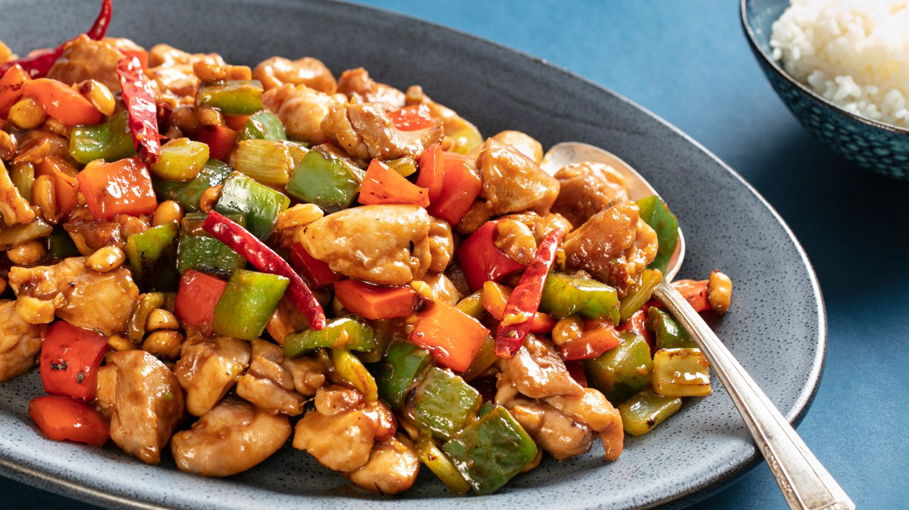

Kung Pao Chicken

Kung Pao chicken, also transcribed Gong Bao or Kung Po, is a spicy, stir-fried Chinese dish made with cubes of chicken, peanuts, vegetables, and chili peppers. The classic dish in Sichuan cuisine originated in the Sichuan Province of south-western China and includes Sichuan peppercorns.
Ingredients (3 servings)
Chicken
- 14 ounces (400g) boneless/skinless chicken breast cut into 1 inch cubes
- 0.5 tbsp Shaoxing wine or dry sherry
- 0.5 tbsp light soy sauce
- 1 tsp baking soda
- 0.5 tsp cornstarch
Sauce
- 0.25 cup low sodium chicken stock (or broth) -- water can be used
- 2.5 tbsp light soy sauce
- 1 tbsp Chinese black vinegar
- 1 tbsp Chinese Shaoxing wine
- 1 tsp dark soy sauce
- 1 tsp hoisin sauce
- 1 tbsp sugar
- 0.5 tsp cornstarch
Stir Fry
- 2 tbsp oil
- 0.75 tbsp garlic (4-6 cloves)
- 0.5 tbsp ginger
- 0.25 red bell pepper seeded and diced
- 0.25 green bell pepper seeded and diced
- 4-5 dried chilies cut into 0.5-inch pieces
- 0.5 tbsp Sichuan peppercorns
- 2 scallion chopped
- 0.25 cup roasted/unsalted peanuts
- 1 tsp sesame oil
Steps
- Combine all ingredients for the chicken in a shallow bowl; cover and marinate for 10 minutes (if time allows)
- Whisk sauce ingredients together until sugar dissolves; set aside
- Heat a large skillet, pan or wok over high heat. Add 2 tablespoons of cooking oil, allow to heat up, then add marinated chicken. Fry chicken for 3-4 minutes while occasionally stirring, until edges are browned. Remove from heat and set aside
- Add remaining cooking oil into the same pan/wok. Stir in garlic, ginger, chili diced peppers (capsicums) and Sichuan peppercorns and stir fry for 1 minute
- Give the prepared sauce a mix, then pour it into the pan and bring it to a boil while stirring
- Once it begins to thicken slightly, add chicken back into the pan/wok and mix all of the ingredients through the sauce until the chicken is evenly coated and sauce has thickened, (about 2 minutes)
- Stir in green onions, peanuts and sesame oil. Toss well and continue to cook for a further 2 minutes to infuse all of the flavours together
- Serve immediately with steamed/cooked rice or fried rice!
Back